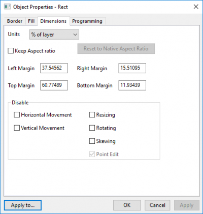

| Pfeil-/Linienobjekt | Rechteck-, Kreis-, Polygon-, Regions-, Polylinien-, Freihandobjekt |
|  |
Legen Sie die Objektposition und -größe in Einheiten fest, ausgewählt in der Auswahlliste Einheiten.
Aktivieren Sie dieses Kästchen, um nur proportionale Größenbemessung zuzulassen.
Klicken Sie auf die Schaltfläche Auf ursprüngliches Seitenverhältnis zurücksetzen, um die Tabellengröße auf das ursprüngliche Seitenverhältnis zurückzusetzen.
Die Optionen zum Deaktivieren steuern das Verhalten des Objekts, während es seine Form und Position ändert. Siehe Zeichenobjekte erstellen.
| Horizontale Bewegung | Aktivieren Sie dieses Kästchen, um eine Verschiebung in horizontaler Richtung zu verhindern. |
|---|---|
| Vertikale Bewegung | Aktivieren Sie dieses Kästchen, um eine Verschiebung in vertikaler Richtung zu verhindern. |
| Größe verändern | Aktivieren Sie diese Kästchen, um die Änderung der Größe zu verhindern. |
| Drehen | Aktivieren Sie diese Kästchen, um die Drehung zu verhindern. |
| Schief anzeigen | Aktivieren Sie diese Kästchen, um eine schiefe Anzeige zu verhindern. |
| Punkt bearbeiten | Aktivieren Sie dieses Kontrollkästchen, um zu verhindern, dass die Position der einzelnen Objektpunkte bearbeitet wird. |